Commentary
LEGEND:
Red = Training error
Green = Validation error
Blue = Test error
The results show that, as expected, a linear classifier will not improve with more examples if the examples
are in no way linearly separable. Also as expected a 1 NN classifier fits the training data perfectly but
does not generalize to new examples, as seen with the high validation and test errors. NNs 2-10 show the training,
test, and validation errors becoming more similar. (They are becoming more biased and showing less variance.)
Perhaps as a consequence of the data I chose the error did not go down as I increased the number of training examples.
 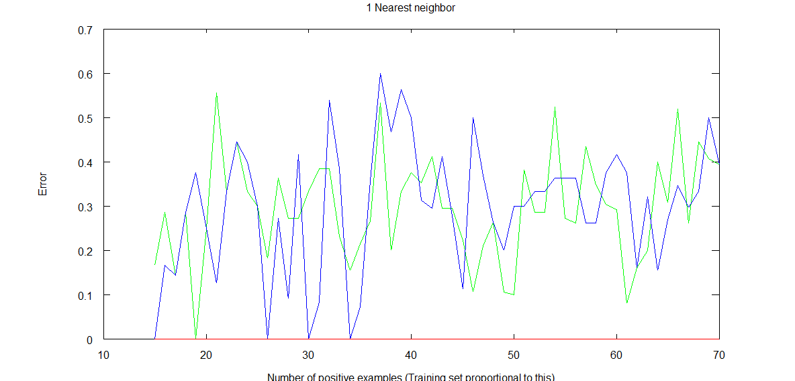
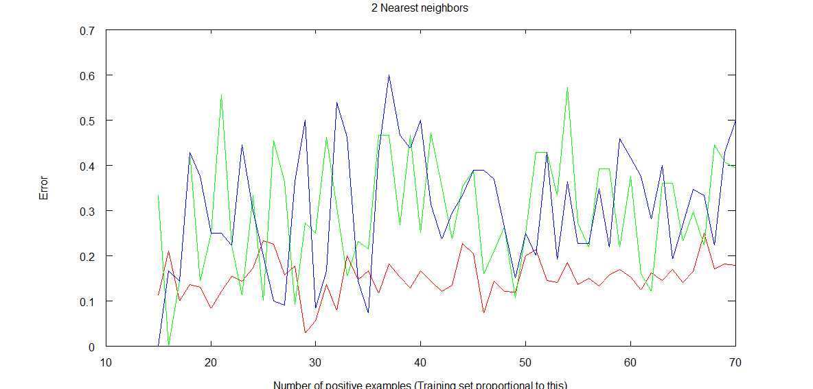
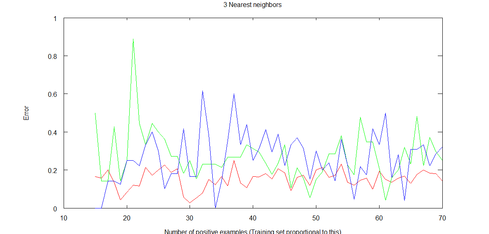
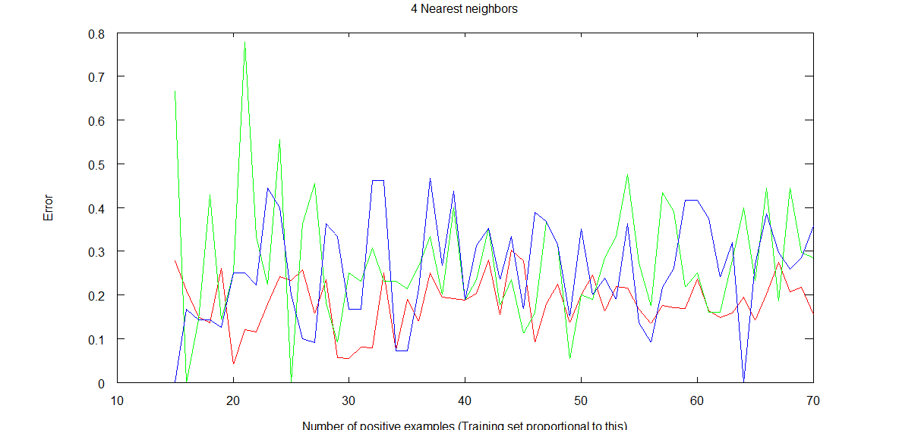
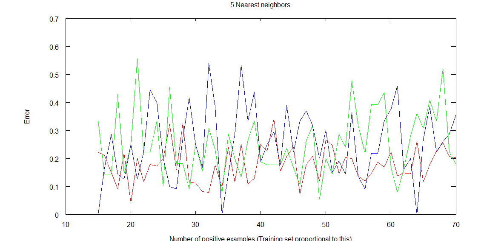
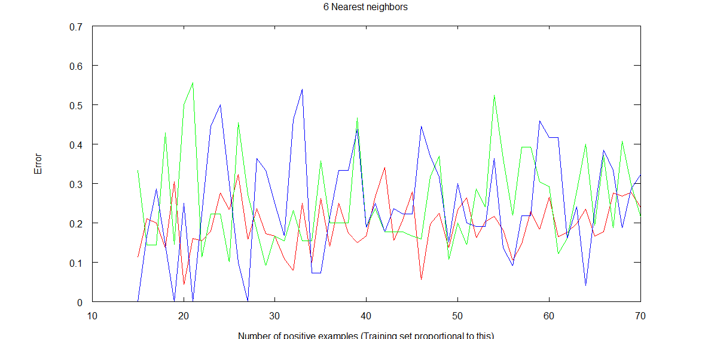
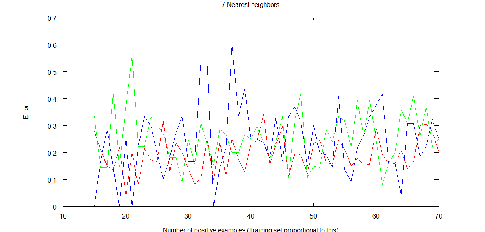
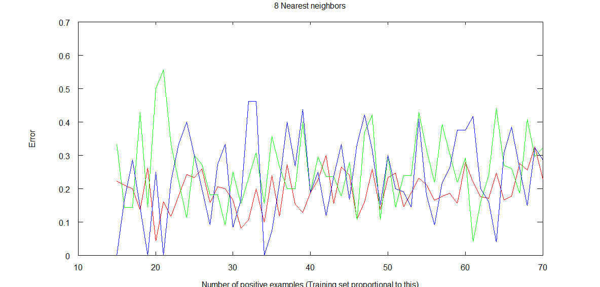
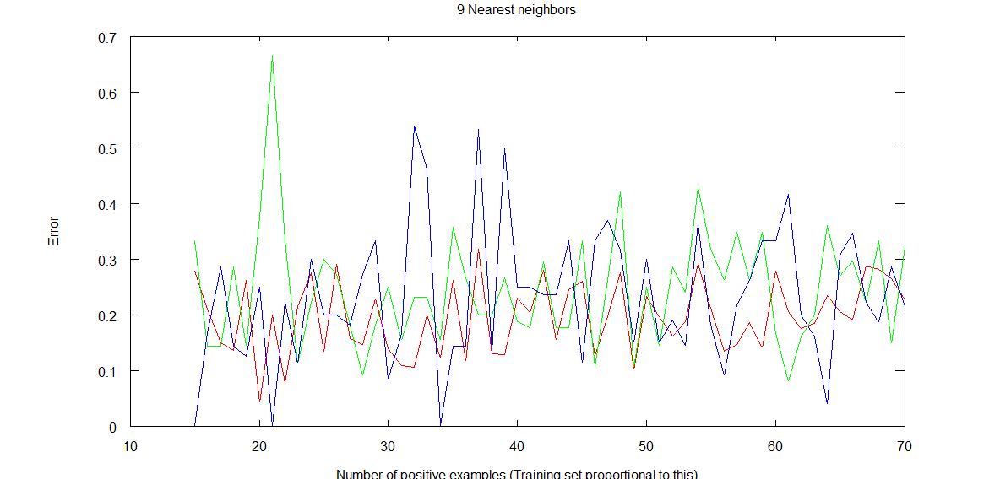
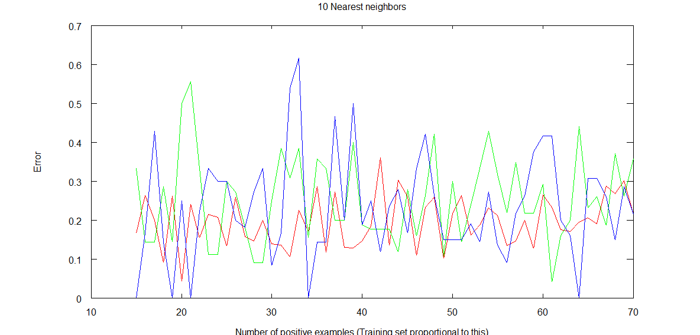
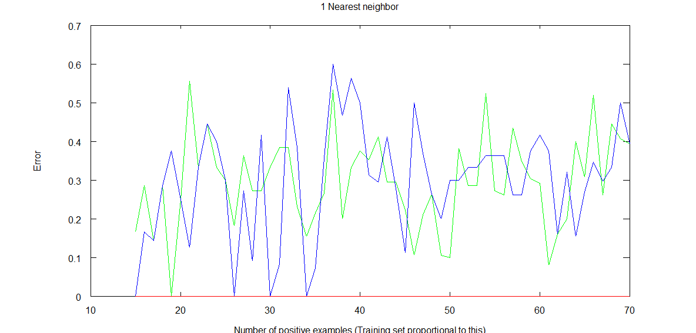
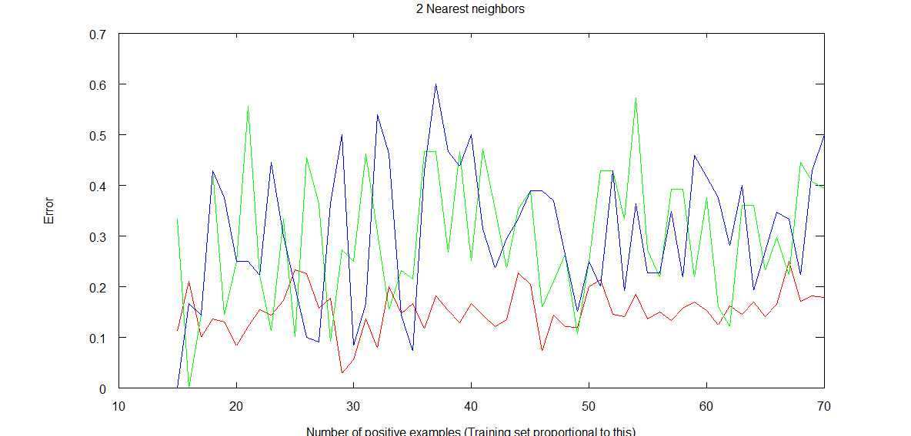
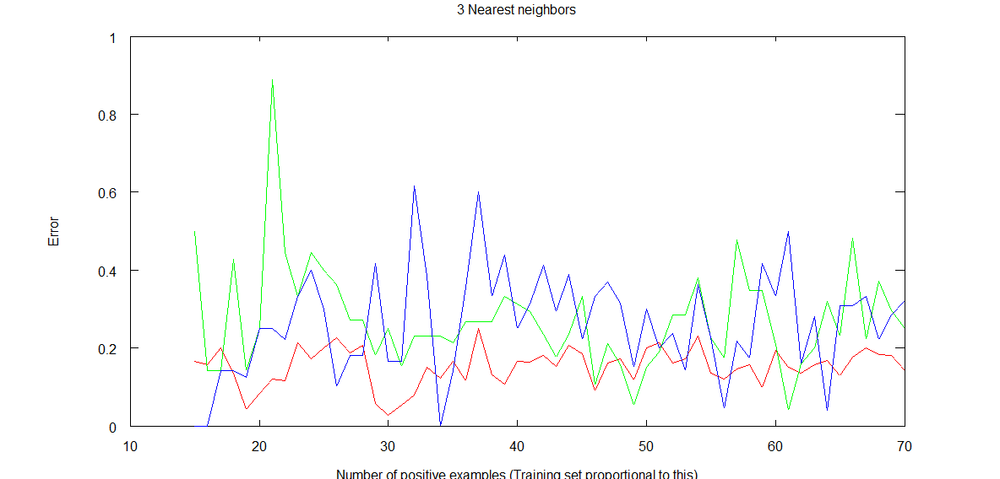
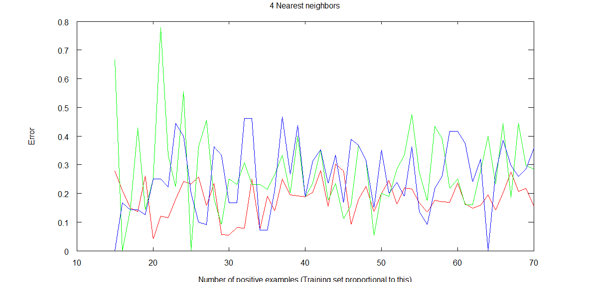
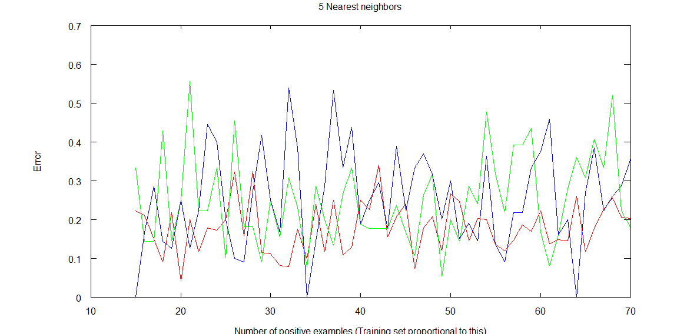
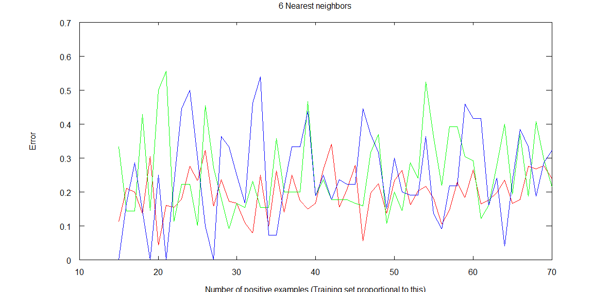
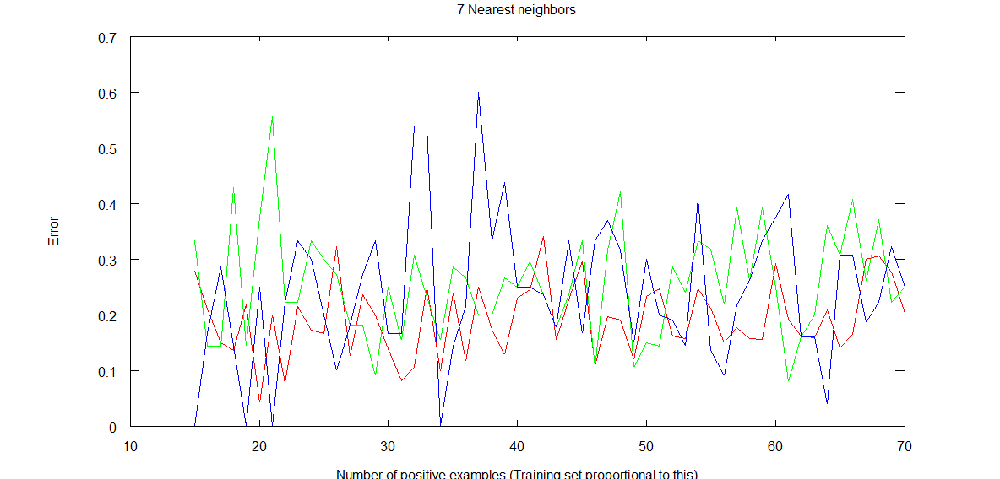
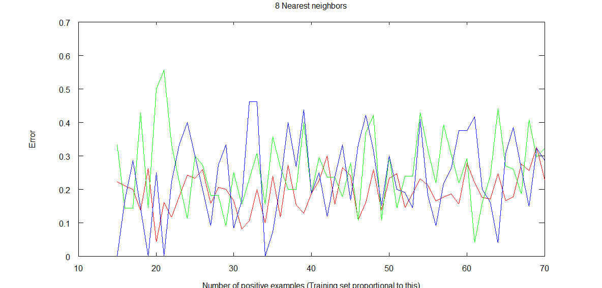
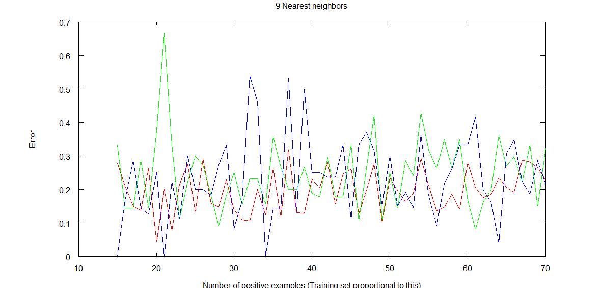
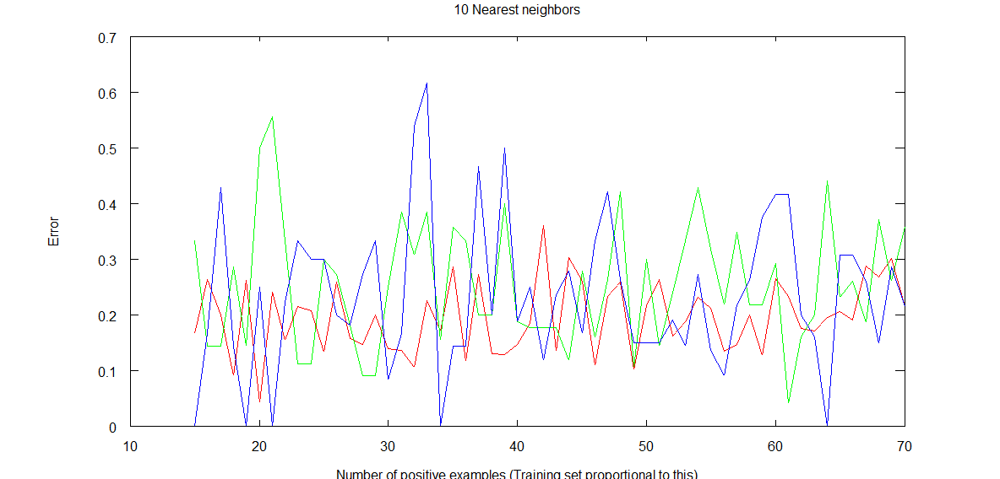
function homework2 = homework2()
%Take some data
%Plot training/validation/test error as a function of training set size
%Use NN with n=1-10 and linear (or logistic) regression,
index = 1;
maxK = 10; %Number of nearest neighbors
minM = 15;
maxM = 70;
mTrials = (maxM - minM);
knnErrorTrain = zeros(mTrials, maxK);
knnErrorValid = zeros(mTrials, maxK);
knnErrorTest = zeros(mTrials, maxK);
eTrain = zeros(mTrials, 1); %For linreg
eValid = zeros(mTrials, 1);
eTest = zeros(mTrials, 1);
for m = minM:maxM %There will be m positive and m negative examples. 2m total
%Generate random data
positiveX = normrnd(6, 3.5, m, 1); %Positive examples
positiveY = normrnd(6, 3.5, m, 1);
negativeX = normrnd(2, 3.5, m, 1); %Negative examples
negativeY = normrnd(2, 3.5, m, 1);
data = [positiveX positiveY ones(m, 1); negativeX negativeY zeros(m,1)];
data = data(randperm(size(data,1)),:); %Randomly shuffle the order of our training examples
%Plot the data
%scatter(positiveX, positiveY)
%hold on
%scatter(negativeX, negativeY, "x")
%title("Randomly generated positive (o) or negative (x) in 2D");
%hold off
%Split traning set into traning (60%), validation (20%), and test (20%)
trainEnd = round(2*m*.6);
validationEnd = round(2*m*.8);
testEnd = rows(data);
training = data(1:trainEnd, :);
validation = data(trainEnd+1:validationEnd, :);
test = data(validationEnd+1: testEnd, :);
%KNN, compute a distance matrix
%distance(i, j) represents the distance from point i to training set point j
distance = zeros(rows(data), rows(training));
for i = 1 : rows(data)
for j = 1 : rows(training)
distance(i, j) = sqrt((training(j,1) - data(i,1))^2 +
(training(j,2) - data(i,2))^2);
end
end
%Nearest neighbor prediction for i:
%Average the labels of the first k elements of the vector distance(i, :)'
%distance(i, :) is every column (each column holds distance to each traning point) of the ith point
kMatrix = zeros(maxK, rows(data)); %Each row is the prediction for every example
for i = 1 : rows(data)
for k = 1 : maxK %k nearest neighbors
labeled = [distance(i, :)' training(:, 3)];
[values, order] = sort(labeled(:,1));
sorted = labeled(order,:);
average = mean(sorted(1:k, 2));
kMatrix(k, i) = average > .5;
end
end
%Calculate error for KNN
for k = 1 : maxK
prediction = kMatrix(k, :)';
knnErrorTrain(index, k) = sum(data(1 : trainEnd, 3) != prediction(1: trainEnd)) / rows(training);
knnErrorValid(index, k) = sum(data(trainEnd+1 : validationEnd, 3) != prediction(trainEnd+1 : validationEnd)) / rows(validation);
knnErrorTest(index, k) = sum(data(validationEnd+1 : testEnd, 3) != prediction(validationEnd+1 : testEnd)) / rows(test);
end
%Linear regression using normal equation
X = [ones(trainEnd, 1) training(:, 1:2)];
y = [training(:, 3)];
theta = pinv(X'*X)*X'*y;
%Calculate error
dataWithBias = [ones(2*m, 1) data(:, 1:2)];
prediction = (dataWithBias*theta) > 0.5;
eTrain(index) = sum(data(1 : trainEnd, 3) != prediction(1: trainEnd)) / rows(training);
eValid(index) = sum(data(trainEnd+1 : validationEnd, 3) != prediction(trainEnd+1 : validationEnd)) / rows(validation);
eTest(index) = sum(data(validationEnd+1 : testEnd, 3) != prediction(validationEnd+1 : testEnd)) / rows(test);
index++;
end
figure(1);
plot(minM:maxM, eTrain, 'Color', 'red')
hold on
plot(minM:maxM, eValid, 'Color', 'green')
hold on
plot(minM:maxM, eTest)
title('Linear regression')
xlabel('Number of positive examples (Training set proportional to this)')
ylabel('Error')
hold off
figure(2);
plot(minM:maxM, knnErrorTrain(:, 10), 'Color', 'red')
hold on
plot(minM:maxM, knnErrorValid(:, 10), 'Color', 'green')
hold on
plot(minM:maxM, knnErrorTest(:, 10))
title('10 Nearest neighbors')
xlabel('Number of positive examples (Training set proportional to this)')
ylabel('Error')
hold off
figure(3);
plot(minM:maxM, knnErrorTrain(:, 1), 'Color', 'red')
hold on
plot(minM:maxM, knnErrorValid(:, 1), 'Color', 'green')
hold on
plot(minM:maxM, knnErrorTest(:, 1))
title('1 Nearest neighbor')
xlabel('Number of positive examples (Training set proportional to this)')
ylabel('Error')
hold off
end